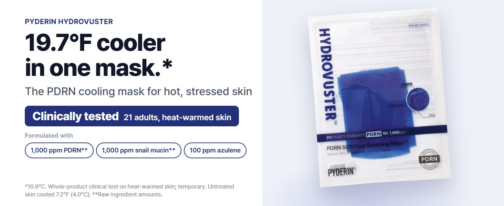
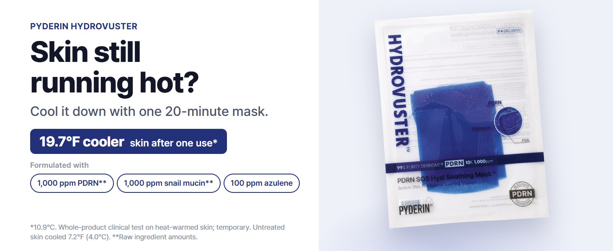
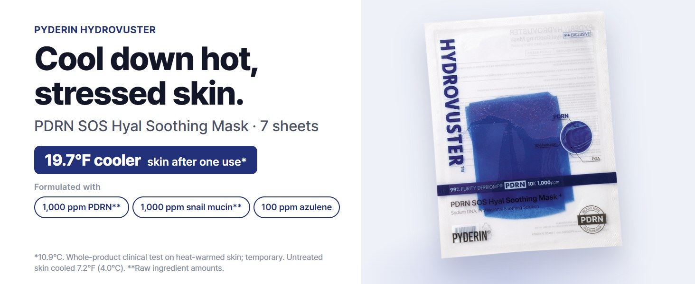

A+ 첫 화면(A1) 후킹 3안 — 판정 대기
셋 다 같은 시험 근거(피부 온도 시험 21명)와 같은 3대 성분 칩. 바뀐 건 제목·부제·결과 상자뿐입니다.
A안 숫자로 후킹 — 시험 결과가 제목

B안 고민으로 후킹 — 고객 상황을 질문으로

C안 결과로 후킹 — 지금 안

셋 다 같은 시험 근거(피부 온도 시험 21명)와 같은 3대 성분 칩. 바뀐 건 제목·부제·결과 상자뿐입니다.


